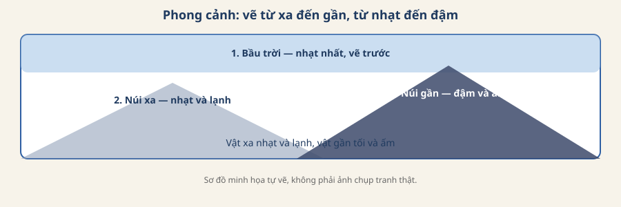

Phong cảnh nhỏ: núi, biển, trăng — vẽ từ xa đến gần
Tác giả: Ruler
Bạn đã vẽ hoa lá bằng nét ấn rồi nhấc lên và vẽ nhanh không sửa. Bài này dạy bạn vẽ phong cảnh nhỏ, vì phong cảnh là chủ đề người mới vẽ nhiều thứ hai sau hoa, và cũng là chủ đề dạy bạn nguyên tắc quan trọng nhất của tranh phong cảnh: vẽ từ xa đến gần, từ nhạt đến đậm, từ mờ đến sắc. ArtsyDee viết rằng phong cảnh nhỏ buộc bạn phải đơn giản hóa, và đó chính là chìa khóa để vẽ một cảnh thuyết phục: bạn gợi ý các yếu tố thay vì vẽ từng chi tiết. Bạn vẽ 3 cảnh trong bài này: núi xa, biển hoàng hôn và hồ trăng đêm. Mỗi cảnh làm trên một tờ giấy khổ nhỏ cỡ bưu thiếp, vẽ xong trong một buổi ngắn. Bài này dùng đúng bộ đồ tối thiểu ở bài bộ đồ: giấy 300 gsm cold press, cọ tròn cỡ 8 và cỡ 4, hộp pan 12 màu.

Sơ đồ minh họa tự vẽ — không phải ảnh chụp. Ba lớp từ xa đến gần: bầu trời nhạt nhất, núi xa nhạt, núi gần đậm nhất.
Nguyên tắc chung: vẽ từ xa đến gần, từ nhạt đến đậm
Mọi cảnh phong cảnh trong bài này đều tuân theo cùng một nguyên tắc: bạn vẽ từ xa đến gần, từ nhạt đến đậm, từ mờ đến sắc. ArtsyDee viết rằng bí quyết tạo chiều sâu là giữ núi xa lạnh và nhạt, rồi dần dần làm ấm và tối hơn khi các yếu tố tiến lại gần. Plaid viết rằng vật tối hơn trông gần hơn, vật nhạt hơn trông xa hơn, đó gọi là phối cảnh không khí (aerial perspective): màu của bầu trời luôn nhạt nhất ở đường chân trời và tối dần khi lên cao.
Bạn vẽ theo thứ tự này trong mọi cảnh: bầu trời trước, rồi núi xa, rồi núi giữa, rồi núi gần, rồi chi tiết cuối cùng. Bạn vẽ bầu trời bằng loang màu ướt trên ướt, vì bầu trời cần mép mềm. Bạn vẽ núi xa khi bầu trời còn hơi ẩm để mép núi mềm, hoặc đợi bầu trời khô hẳn nếu bạn muốn mép núi sắc. Bạn vẽ núi gần bằng vẽ trên giấy khô, vì núi gần cần mép sắc và chi tiết. Bạn vẽ chi tiết cuối cùng — cây, mặt trăng, vệt sáng trên nước — khi mọi lớp dưới đã khô hẳn.
Bạn chỉ cần 4 màu để vẽ gần như mọi phong cảnh, theo ArtsyDee: xanh ultramarine, nâu đất, vàng đất và xanh sap. Bạn trộn xanh ultramarine với nâu đất để được màu xám núi đẹp. Bạn không cần mua thêm màu nào cho bài này. Bạn dùng cọ tròn cỡ 8 cho bầu trời và núi xa, cọ tròn cỡ 4 cho núi gần và chi tiết.
Bạn kẻ một đường chân trời thật nhẹ bằng bút chì trước khi tô. ArtsyDee viết rằng với phong cảnh nhỏ, một đường bút chì thật nhẹ cho đường chân trời thường là đủ, và phác thảo quá nhiều sẽ làm bức tranh cứng. Bạn không phác thảo chi tiết bầu trời, vì bầu trời vẽ đẹp nhất khi không có đường bút chì lộ ra.
Cảnh 1: núi xa — ba lớp núi chồng lên nhau
Núi là chủ đề dễ nhất cho người mới, vì núi về cơ bản là hình tam giác có vân. ArtsyDee viết rằng núi dễ vẽ vì bạn chỉ cần xếp lớp: núi xa nhạt trước, núi gần tối sau.
Bước 1: vẽ bầu trời. Bạn làm ướt vùng bầu trời bằng nước sạch, rồi tô xanh dương ở trên, nhạt dần xuống gần đường chân trời. Bạn dùng kỹ thuật loang màu ướt trên ướt trong bài kỹ thuật loang màu, vì bầu trời cần chuyển màu mềm từ đậm sang nhạt. Bạn để bầu trời khô một chút, nhưng chưa khô hẳn.
Bước 2: vẽ núi xa. Bạn vẽ núi xa khi bầu trời còn hơi ẩm, để mép núi mềm. Bạn dùng màu tím xám nhạt, ví dụ xanh ultramarine trộn một chút đỏ, và vẽ hình tam giác thấp ở đường chân trời. Bạn vẽ núi xa nhạt và lạnh, vì núi xa trong không khí trông nhạt và lạnh hơn núi gần. ArtsyDee viết rằng núi xa nhạt và lạnh, núi gần ấm và tối dần, là bí quyết tạo chiều sâu.
Bước 3: vẽ núi giữa. Bạn đợi bầu trời khô hẳn nếu bạn muốn mép núi giữa sắc, hoặc vẽ khi còn hơi ẩm nếu bạn muốn mép mềm. Bạn dùng màu tối hơn núi xa một bậc, và vẽ hình tam giác cao hơn, chồng lên một phần núi xa. Bạn vẽ núi giữa đậm hơn, vì nó gần bạn hơn.
Bước 4: vẽ núi gần và chi tiết. Bạn vẽ núi gần bằng màu tối nhất, ví dụ xanh ultramarine trộn nâu đất cho màu xám núi. Bạn vẽ hình tam giác lớn nhất ở phía trước, và thêm vài cây thông bằng nét tam giác nhỏ màu tối dọc theo sườn núi. Bạn có thể thêm tuyết trên đỉnh núi bằng cách chừa trắng ngay từ đầu, không tô màu vào đỉnh núi.
Bạn nhìn lại bức tranh: bạn sẽ thấy ba lớp núi từ nhạt đến đậm tạo ra chiều sâu, dù bạn chỉ vẽ ba hình tam giác. Bạn không cần vẽ từng cây, từng tảng đá. Bạn chỉ cần ba lớp núi và một bầu trời.
Cảnh 2: biển hoàng hôn — loang màu ướt trên ướt
Hoàng hôn trên biển là cảnh dễ vẽ đẹp nhất trong bài này, vì màu nước tự tạo ra những chuyển màu mềm và sáng. ArtsyDee viết rằng hoàng hôn trên biển kỳ diệu vì màu nước tự tạo ra những chuyển màu mềm mại và sáng, bạn chỉ cần làm việc ướt trên ướt và để màu tự hòa vào nhau.
Bước 1: làm ướt vùng bầu trời và biển. Bạn làm ướt toàn bộ tờ giấy từ trên xuống dưới, đến chỗ nước biển bắt đầu. Bạn dùng cọ tròn cỡ 8 nạp đầy nước sạch, tô ngang và dọc cho nước phủ đều.
Bước 2: chấm màu vào bầu trời. Bạn chấm màu vàng gần đường chân trời, nơi mặt trời sẽ ở. Bạn chấm màu cam ở phía trên màu vàng, để màu cam tự loang vào vàng. Bạn chấm màu hồng hoặc tím ở phía trên cùng của bầu trời. Bạn không tô, bạn chỉ chấm màu và để màu tự hòa vào nhau trên giấy ướt. Bạn sẽ thấy bầu trời chuyển từ vàng sang cam sang hồng sang tím, mềm mại như bầu trời thật.
Bước 3: đợi khô hẳn. Bạn đợi bầu trời khô hoàn toàn. Bạn không vẽ biển khi bầu trời còn ướt, vì màu biển sẽ loang vào màu trời và làm mất đường chân trời.
Bước 4: vẽ mặt biển. Bạn vẽ mặt biển bằng những nét ngang, phản chiếu màu bầu trời: vàng gần chân trời, cam và hồng ở giữa, tím ở xa. Bạn tô ngang bằng cọ tròn cỡ 8, mỗi nét một màu, để màu không trộn thành nâu. Bạn vẽ một đường chân trời mỏng màu tối ở chỗ bầu trời gặp mặt biển, để hai vùng tách ra rõ ràng.
Bước 5: vẽ mặt trời và vệt sáng. Bạn chừa trắng một vòng tròn nhỏ làm mặt trời ngay từ đầu, khi bạn chấm màu bầu trời, bạn không tô màu vào vòng tròn đó. Hoặc bạn vẽ mặt trời sau bằng cách lấy màu ra khỏi vùng tròn khi màu còn hơi ẩm, dùng cọ khô chạm nhẹ. Bạn vẽ vệt sáng trên mặt biển bằng những nét ngang ngắn màu vàng nhạt, càng gần mặt trời càng sáng và càng nhiều, càng xa mặt trời càng tối và càng thưa.
Bạn nhìn lại bức tranh: bạn sẽ thấy bầu trời và mặt biển phản chiếu nhau, và đường chân trời tách hai vùng ra. Bạn không cần vẽ sóng, không cần vẽ thuyền. Bạn chỉ cần chuyển màu mềm và đường chân trời.
Cảnh 3: hồ trăng đêm — bầu trời tối, mặt trăng sáng
Hồ trăng đêm là cảnh ấn tượng nhất trong bài này, và cũng là cảnh dạy bạn kỹ thuật lấy màu ra và cọ khô. Miranda Balogh hướng dẫn vẽ hồ trăng đêm trong 10 phút, với 4 bước: bầu trời, núi, mặt trăng và vệt sáng phản chiếu.
Bước 1: vẽ bầu trời đêm. Bạn làm ướt toàn bộ tờ giấy bằng nước sạch, dùng cọ mop hoặc cọ dẹt lớn tô ngang và dọc cho nước phủ đều. Bạn đổi sang cọ tròn cỡ 8, nạp màu hồng, ví dụ hồng opera, và tô vào phần dưới của bức tranh, nơi sẽ vẽ đường chân trời. Bạn rửa cọ, nạp màu xanh dương, ví dụ xanh phthalo, tô vào phần dưới của tờ giấy và hòa lên trên để trộn với màu hồng, tạo thành màu tím. Bạn tô màu xanh lên phần trên của tờ giấy và hòa xuống dưới cho đến khi hòa với màu hồng, tạo ra tông tím nhẹ. Bạn đợi lớp này khô hẳn.
Bước 2: vẽ núi. Bạn pha màu xanh dương với một chút xám tối, ví dụ xám Payne, để được màu xanh chàm tối. Bạn kẻ một đường thẳng ở giữa vùng hồng, đó là đường chân trời, phân biệt chỗ bầu trời gặp mặt đất. Bạn vẽ hai ngọn núi dốc hội tụ ở giữa bức tranh thành hình chữ V, vẽ viền núi rồi tô đầy bằng màu tối. Bạn thêm màu để núi có hình dạng không đều, với vài chỗ lồi lõm, cho núi trông tự nhiên hơn. Khi màu còn ướt, bạn rửa cọ, nạp nước sạch, và kéo lông cọ dọc theo đường chân trời để hòa màu xanh tối vào màu hồng, làm hai lần để tạo chuyển màu mượt mà, như núi xa phản chiếu trên mặt nước. Bạn đợi lớp này khô hẳn.
Bước 3: vẽ mặt trăng và vệt sáng. Bạn đổi sang cọ tròn cỡ 4, nạp màu trắng gouache, không pha loãng. Bạn dùng đầu cọ vẽ một vòng tròn nhỏ ở điểm thấp nhất nơi hai ngọn núi hội tụ, vì bố cục núi sẽ dẫn mắt người xem tới mặt trăng. Bạn pha loãng màu trắng với một chút nước, dùng kỹ thuật cọ khô để thêm màu trắng lên mặt hồ, tạo vệt sáng phản chiếu của mặt trăng trên mặt nước. Kỹ thuật cọ khô là bạn dùng cọ gần khô, chạm nhẹ lên giấy, để màu chỉ dính vào phần nhô lên của vân giấy, tạo vệt sáng đứt quãng như sóng.
Bước 4: làm rõ mặt trăng và vệt sáng. Bạn đợi lớp màu khô, rồi nạp cọ bằng màu trắng gouache một lần nữa và làm sáng mặt trăng thêm một chút nếu cần. Bạn dùng kỹ thuật cọ khô để thêm vệt sáng phản chiếu lên mặt nước, nhớ rằng vệt sáng càng gần mặt trăng càng sáng và càng nhiều, càng xa mặt trăng càng tối và càng thưa.
Plaid hướng dẫn một cách khác để vẽ mặt trăng: bạn dùng kỹ thuật lấy màu ra (lifting), dùng cọ gần khô chạm nhẹ lên vùng bầu trời còn hơi ẩm để lấy màu ra khỏi giấy, tạo thành hình trăng lưỡi liềm trắng. Bạn chọn một trong hai cách: vẽ mặt trăng bằng màu trắng gouache lên trên, hoặc lấy màu ra để lộ giấy trắng. Bạn không cần cả hai cách trong cùng một bức tranh.
Những lỗi thường gặp khi vẽ phong cảnh nhỏ
Vẽ quá nhiều chi tiết. Bạn vẽ từng cây, từng tảng đá, từng con sóng, và bức tranh nhỏ bị rối. ArtsyDee viết rằng phong cảnh nhỏ buộc bạn phải đơn giản hóa, và đó chính là chìa khóa: bạn gợi ý các yếu tố thay vì vẽ từng chi tiết. Bạn vẽ 3 lớp núi, không vẽ 30 cây. Bạn vẽ 5 nét ngang làm mặt biển, không vẽ 50 con sóng.
Núi xa tối hơn núi gần. Bạn vẽ núi xa bằng màu tối, núi gần bằng màu nhạt, và bức tranh mất chiều sâu. Bạn nhớ quy tắc: núi xa nhạt và lạnh, núi gần tối và ấm. Bạn kiểm tra bằng cách nheo mắt nhìn bức tranh: vùng nào tối nhất phải là vùng gần nhất.
Bầu trời và biển trộn vào nhau. Bạn vẽ biển khi bầu trời còn ướt, màu biển loang vào màu trời và đường chân trời biến mất. Plaid viết rằng bạn nên vẽ theo đúng thứ tự: đợi bầu trời và mây khô hẳn trước khi vẽ thêm màu ở đường chân trời, để tránh trộn bầu trời và đường chân trời vào nhau. Bạn đợi khô hẳn, kiểm tra bằng cách sờ mặt sau tờ giấy, rồi mới vẽ tiếp.
Mặt trăng bị chìm. Bạn vẽ mặt trăng bằng màu trắng loãng lên trên bầu trời tối, và mặt trăng chìm vào bầu trời. Bạn vẽ mặt trăng bằng màu trắng gouache không pha loãng, hoặc bạn chừa trắng ngay từ đầu. Bạn vẽ mặt trăng ở điểm hội tụ của núi, nơi mắt người xem tự nhiên nhìn tới, và bạn làm mặt trăng sáng nhất trong bức tranh.
Giấy cong vì quá nhiều nước. Bạn làm ướt cả tờ giấy nhiều lần, giấy cong lên và màu đọng thành vũng. Bạn dùng giấy 300 gsm cold press trong bộ đồ tối thiểu, và bạn dán băng dính giấy quanh mép tờ giấy trước khi vẽ, hoặc dùng block giấy dán 4 cạnh. Plaid viết rằng bạn nên dùng giấy từ 200 gsm trở lên để tranh không cong vênh khi ướt, và bạn dán băng dính quanh mép tờ giấy trước khi vẽ để giữ giấy phẳng và có viền sạch khi gỡ băng ra.
Kết luận
Bạn đã vẽ được 3 cảnh phong cảnh nhỏ: núi xa, biển hoàng hôn và hồ trăng đêm. Mỗi cảnh chỉ dùng một nguyên tắc: vẽ từ xa đến gần, từ nhạt đến đậm, từ mờ đến sắc. Bạn vẽ mỗi cảnh 3 lần trong tuần, mỗi lần một bảng màu khác nhau, và bạn sẽ thấy mình đoán được độ đậm nhạt và thứ tự các lớp chính xác hơn hẳn.
Bài tiếp theo trong website này là bài "Giữ tranh màu nước khỏi phai và ẩm", nơi bạn học cách bảo vệ những bức tranh bạn vừa vẽ: treo ở đâu, đóng khung thế nào, và cất giữ ra sao. Bạn đọc bài đó khi đã vẽ xong 3 cảnh phong cảnh, vì khi đó bạn đã có tranh để giữ.
Nguồn tham khảo
- ArtsyDee, "Mini Watercolor Landscapes for Beginners" — phong cảnh nhỏ buộc bạn phải đơn giản hóa, gợi ý thay vì vẽ từng chi tiết; núi là hình tam giác có vân, xếp lớp từ nhạt đến đậm: bầu trời ướt trên ướt, núi xa tím xám nhạt khi bầu trời còn ẩm, núi giữa tối hơn khi bầu trời đã khô, núi gần tối nhất; biển hoàng hôn: làm ướt vùng trời và biển, chấm vàng gần chân trời, cam ở trên, hồng/tím ở trên cùng, đợi khô hẳn rồi vẽ mặt biển bằng nét ngang phản chiếu màu trời, vẽ đường chân trời mỏng; bảng màu phong cảnh tối thiểu: xanh ultramarine, nâu đất, vàng đất, xanh sap; phối cảnh không khí: vật xa nhạt và lạnh, vật gần tối và ấm; kích thước phong cảnh nhỏ từ 5×7 cm đến 10×15 cm (truy cập 23/11/2026, W-14 mở trực tiếp): https://www.artsydee.com/mini-watercolor-landscapes-for-beginners/
- Miranda Balogh, "Super Easy Watercolour Painting For Beginners (10 Minute Tutorial)" — vẽ hồ trăng đêm trong 10 phút: làm ướt toàn bộ giấy, tô hồng opera ở phần dưới, xanh phthalo ở dưới và trên hòa vào hồng thành tím, đợi khô; vẽ núi bằng xanh dương trộn xám Payne thành xanh chàm tối, hai ngọn núi dốc hội tụ thành hình chữ V, dùng nước sạch kéo dọc đường chân trời để hòa màu núi vào màu hồng; vẽ mặt trăng bằng màu trắng gouache không pha loãng ở điểm hội tụ của núi, dùng kỹ thuật cọ khô để vẽ vệt sáng phản chiếu trên mặt hồ, vệt sáng càng gần mặt trăng càng sáng và nhiều, càng xa càng tối và thưa (truy cập 23/11/2026, W-14 mở trực tiếp): https://mirandabalogh.com/easy-watercolour-painting/
- Plaid, "Easy Watercolor Landscape Painting" — vẽ phong cảnh theo 5 bước: phác thảo nhẹ đường chân trời và đồi, vẽ bầu trời bằng loang màu ướt trên ướt với các hàng màu xanh ultramarine, xanh cobalt, hồng, vàng gamboge hòa vào nhau, lấy màu ra để tạo trăng lưỡi liềm trắng; vẽ đồi giữa bằng vẽ trên giấy khô cho mép sắc, tối dần từ xanh cerulean xuống xanh Prussian; vẽ đồi trước bằng nhiều lớp màu lilac, chàm, xanh cerulean và tím chồng lên nhau (glazing), vẽ cây bằng nét nhỏ; dùng giấy từ 200 gsm trở lên, dán băng dính quanh mép giấy trước khi vẽ; đợi một lớp khô hẳn trước khi vẽ lớp tiếp theo; đừng trộn quá nhiều màu trên giấy (truy cập 23/11/2026, W-14 mở trực tiếp): https://plaidonline.com/inspire-and-create/article/easy-watercolor-landscape-painting